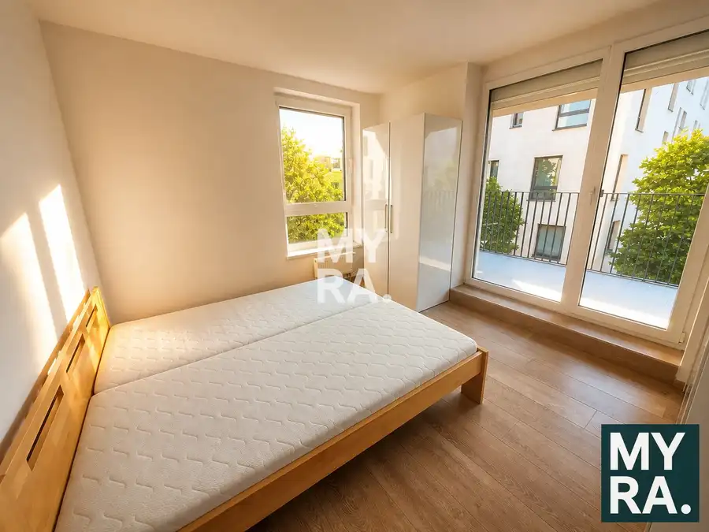
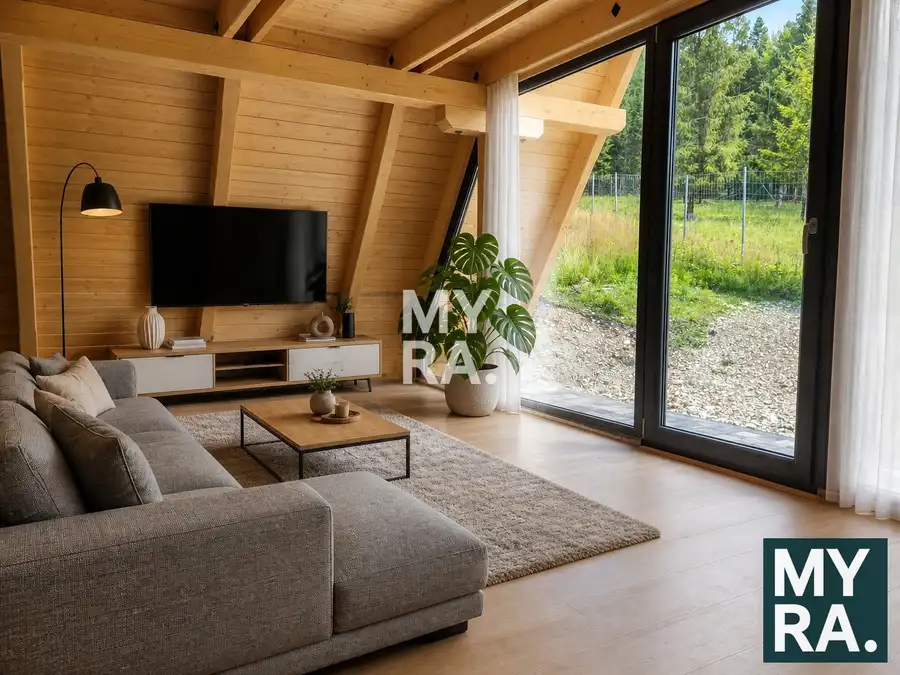
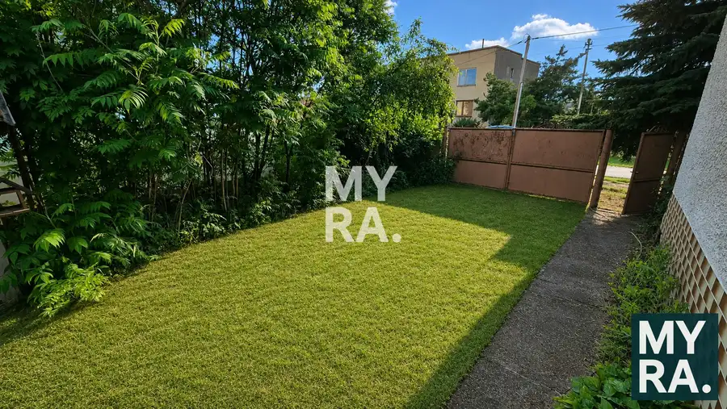

3 izbový byt, 82 m2, pôvodný stav, 4 p., balkón, pivnica
Sídlisko Ťahanovce, Košice
- Dispozícia3-izbový
- Plocha82 m²
- Poschodie4.
- StavPôvodný stav
- VlastníctvoOsobné
O nehnuteľnosti
Vyberte si byt, ktorý čaká len na to, kým mu vdýchnete nový život podľa svojich predstáv. Ponúkame Vám na predaj trojizbový byt na Bukureštskej ulici v Košiciach, v obľúbenej lokalite Sídliska Ťahanovce. Táto nehnuteľnosť predstavuje ideálne „čisté plátno“ pre rodiny, ktoré hľadajú domov na mieru, alebo pre investorov so zmyslom pre kvalitnú rekonštrukciu.Byt sa nachádza na 4. poschodí, čo zabezpečuje príjemnú rovnováhu medzi dostupnosťou a dostatočným súkromím. S celkovou rozlohou 82 m² poskytuje veľkorysý priestor, ktorý je v rámci panelových domov čoraz vzácnejší. Dispozícia bytu je premyslená a funkčná: orientácia na dve svetové strany zabezpečuje prirodzené presvetlenie počas celého dňa. Kuchyňa a spálňa sú orientované na východ, čo zaručuje príjemné vstávanie so slnečnými lúčmi, zatiaľ čo ďalšie dve izby smerujú na západ, kde si môžete v podvečerných hodinách užívať pokojnú atmosféru.Pôvodný stav zahŕňa umakartové jadro (kúpeľňa a samostatné WC) a pôvodnú elektroinštaláciu. Dôležitým bonusom sú plastové okná menené pred približne 8 rokmi, ktoré sú v dobrom technickom stave a šetria vaše budúce náklady pri prestavbe. K bytu prislúcha aj balkón, a pivnica, ktorá poskytne potrebný úložný priestor pre sezónne veci.Lokalita na ulici Bukureštská patrí k vyhľadávaným častiam sídliska vďaka kompletnej občianskej vybavenosti. V pešej dostupnosti nájdete školy, škôlky, obchody aj zastávky MHD, ktoré vás rýchlo spoja s centrom Košíc. Okolie ponúka možnosti na prechádzky či športové aktivity, čo ocenia najmä aktívne rodiny.Tento byt sa predáva za sumu 185 000 €. Je to ponuka, ktorá v sebe spája férovú cenu za rozlohu 82 m² a možnosť postaviť si domov presne podľa vlastných požiadaviek.Neváhajte a príďte sa presvedčiť o potenciáli tohto bytu osobne. ---**HLAVNÉ BENEFITY NEHNUTEĽNOSTI:**- **Veľkorysá výmera**: Byt o rozlohe 82 m² ponúka priestranné izby a komfortné bývanie.- **Ideálna orientácia**: Východ (kuchyňa, spálňa) a Západ (2 izby) pre maximum denného svetla.- **Výborná dispozícia**: Tri samostatné izby vhodné pre rodinu s deťmi.- **Plastové okná**: Moderné okná menené pred 8 rokmi v dobrom stave.- **Priestor pre kreativitu**: Pôvodný stav umožňuje kompletnú rekonštrukciu podľa vlastného vkusu.- **Doplnkové priestory**: Súčasťou bytu je loggia (balkón) a praktická pivnica.- **Výborná lokalita**: Bukureštská ulica s kompletnou občianskou vybavenosťou v dosahu.- **Investičná príležitosť**: Vhodné na modernizáciu a následný prenájom alebo predaj.Pre dohodnutie obhliadky a bližšie informácie ma kontaktujte na:**miroslav.cerny@myrapoint.sk alebo +421 901 702 121**Fotografie miestností po rekonštrukcii sú vizualizácie.
Parametre
| Cellar area | 2 m² |
|---|---|
| Cena vrátane energií | Nie |
| Druh | 3 izbový byt |
| Dátum zverejnenia | 13. 8. 2026 |
| Plocha lodžie | 3 m² |
| Podlažie | 4 |
| Počet izieb / miestností | 3 |
| Počet lodžií | 1 |
| Počet pivníc | 1 |
| Stav nehnuteľnosti | Pôvodný stav |
| Typ | Predaj |
| Typ konštrukcie | Panelová |
| Umiestnenie | Ďalšie nadzemné podlažie |
| Vlastníctvo | Osobné |
| Vybavenie | Lodžia, Pivnica, Verejné parkovanie, Výťah |
| Úžitková plocha | 82 m² |
Kde to je


Mohlo by Vás zaujímať

BytNové10 1 350 €3 izbový byt, 73 m2, loggia, parkovacie miesto, klimatizacia Západ, Košice 3-izbový82 m²1. podlažie Hľadáte bývanie, ktoré v sebe spája moderný mestský štýl, dostatok priestoru a pokojnú atmosféru? Predstavujeme Vám 3-izbový byt na Fatranskej ulici,…
Chalupa, rekreačný domčekNové10 194 000 €Moderná novostavba v tichej lokalite blízko lesa Nálepkovo 80 m² Predstavte si miesto, kde sa ráno zobúdzate za zvukov šumiaceho lesa, kde vzduch vonia po ihličí a jedinými susedmi sú ticho a pokoj prírody.…
DomNové4 140 000 €Rovinatý pozemok o výmere 1053 m2 so starým domom, Cestice Cestice 100 m² Realitná kancelária MYRA. Košice a JUDr. Miroslav Černý, Vám predstavuje tradičný dom s krásnym pozemkom v tichej obci Cestice.Lokalita obce Cestice…